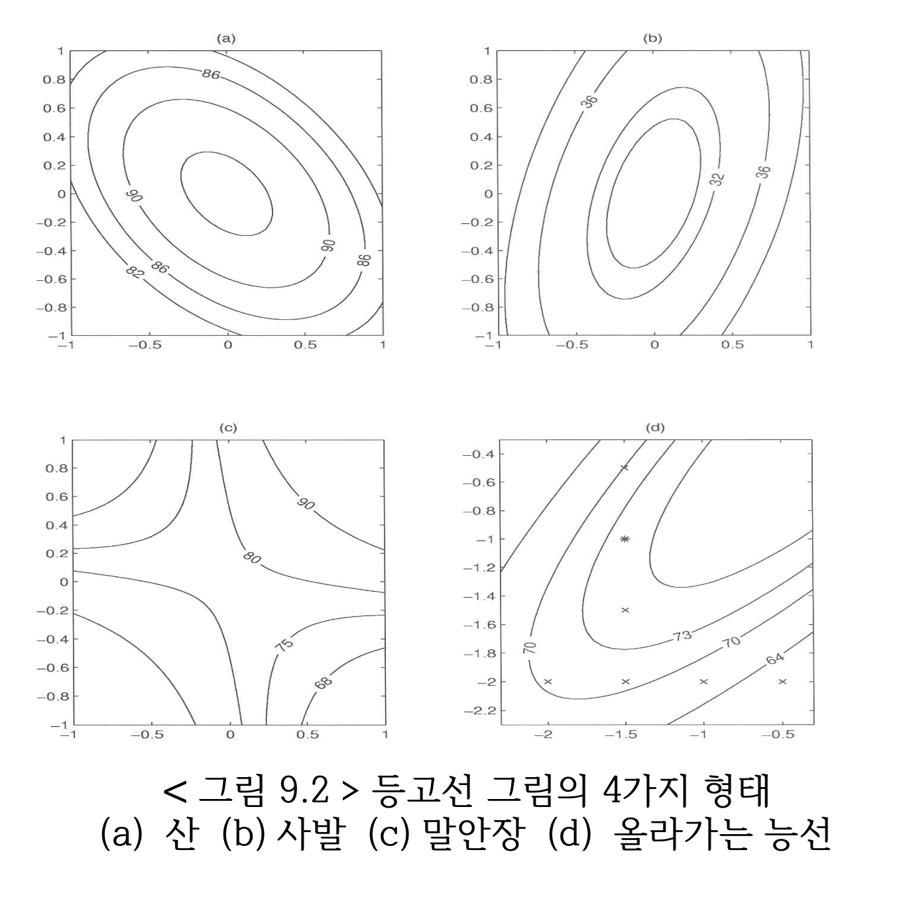
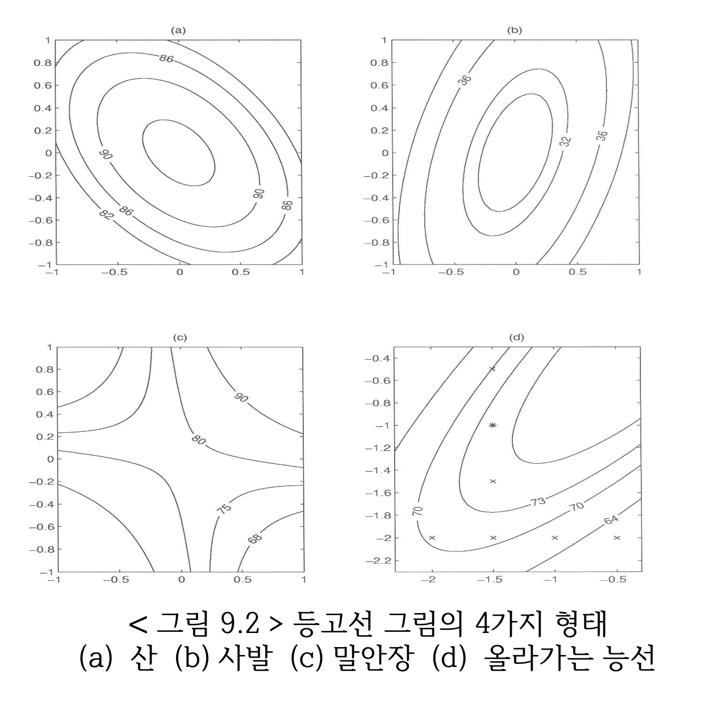

제 3 장 2차 반응표면
3.1 개요
여러번의 간단한 실험을 순차적으로 수행하면서 1차모형과 최대경사법을 이용하여 최적점 근처로 실험점을 이동한다.
최적조건 근처의 영역에서는 반응표면모형의 모형으로 곡선효과가 고려된 2차 다항 모형을 가정하고 최적점을 찾는다.
3.2 2차 다항 모형
이제 반응변수 \(y\)의 변화(반응표면; response surface)를 \(k\) 개의 독립변수 \(x_1, x_2, \cdots, x_k\) 로 이루어진 2차 다항식(second polynomial function)으로 적합하는 2차 다항 모형을 고려하자.
\[\begin{equation} y = \beta_0 + \sum_{i=1}^{k} \beta_i x_i + \sum_{i=1}^{k} \beta_{ii} x^2_i + \underset{i<j}{\sum \sum} \beta_{ij} x_i x_j +e \tag{3.1} \end{equation}\]
3.3 이차 반응표면의 모양
예를 들어 독립변수가 두 개인 경우 다음과 같은 2차 다항 모형이 된다.
\[\begin{equation} y = \beta_0 + \beta_1 x_1 + \beta_2 x_2 + \beta_{11} x_1^2 + \beta_{22} x_2^2 + \beta_{12} x_1 x_2 + e \tag{3.2} \end{equation}\]
독립변수가 두 개인 경우 2차 다항 모형 (3.2) 은 다음 그림과 같이 다양한 반응 표면을 가질 수 있다.
 

그림 3.1: 이차 반응표면의 모양- 표면그림과 등고선
3.4 최적점과 정상점
2차 다항모형 (3.1)을 반응표면 분석에 사용하는 이유는 반응변수의 값이 최대가 되는 독립변수들의 값을 구하기 위함이다. 이렇게 반응변수의 값이 최대가 되는 독립변수들의 값을 최적점(optimum point) 라고 부른다.
최적점을 찾는 방법은 2차 다항모형 (3.1)을 각 독립변수로 미분한 식을 0으로 놓고 방정식을 푸는 것이다. 최적점을 찾는 방법을 좀 더 체계적으로 구성하기 위하여 2차 다항모형 (3.1) 을 벡터와 행렬로 나타내어 보자.
먼저 자료를 이용하여 2차 다항모형 (3.1) 에 나타난 계수들을 추정한 후 반응변수의 예측식을 다음과 같이 나타낼 수 있다. 아래의 식에서 \(b_0,b_{i}, b_{ii}, b_{ij}\) 는 각각 회귀계수 \(\beta_0, \beta_{i}, \beta_{ii}, \beta_{ij}\) 의 추정값이라고 하자.
\[\begin{equation} \hat y = b_0 + \sum_{i=1}^{k} b_i x_i + \sum_{i=1}^{k} b_{ii} x^2_i + \underset{i<j}{\sum \sum} b_{ij} x_i x_j \tag{3.3} \end{equation}\]
이제 추정식 (3.3) 를 다음과 같이 벡터와 행렬로 나타내자.
\[\begin{equation} \hat y = b_0 + {\bm x}^t \bm b + {\bm x}^t \bm B {\bm x} \tag{3.4} \end{equation}\]
여기서 \(k \times 1\) 차원의 독립변수 벡터 \(\bm x\), \(k \times 1\) 차원의 1차 계수 벡터 \(\bm b\), \(k \times K\) 차원의 2차 계수 행렬 \(\bm B\) 는 다음과 같이 주어진다. 여기서 2차 계수 행렬 \(\bm B\) 는 대칭행렬이며 비대각 원소는 계수 \(b_{ij}\)의 반 값임을 유의하자.
\[\begin{equation} \bm x = \begin{bmatrix} x_1 \\ x_2 \\ \vdots \\ x_k \end{bmatrix} , \quad \bm b = \begin{bmatrix} b_1 \\ b_2 \\ \vdots \\ b_k \end{bmatrix}, \quad \bm B = \begin{bmatrix} b_{11} & \frac{b_{12}}{2} & \frac{b_{13}}{2} & \dots & \frac{b_{1k}}{2} \\ \frac{b_{12}}{2} & b_{22} & \frac{b_{23}}{2} & \dots & \frac{b_{2k}}{2} \\ \frac{b_{13}}{2} & \frac{b_{23}}{2} & b_{33} & \dots & \frac{b_{3k}}{2} \\ \vdots & \vdots & \vdots & \vdots & \vdots \\ \frac{b_{1k}}{2} & \frac{b_{2k}}{2} & \frac{b_{3k}}{2} & \dots & b_{kk} \end{bmatrix} \tag{3.5} \end{equation}\]
이제 정삼점을 찿는 방법은 2차 다항 에측식 (3.3) 를 각 독립변수 \(x_i\) 로 미분한 식을 0으로 놓은 방정식을 풀면 된다.
\[\begin{equation} \pardiff{\hat y}{x_i} = b_i + 2 b_{ii} x_i + \sum_{j \ne i} b_{ij} x_j =0, \quad i=1,2,\cdots, k \tag{3.6} \end{equation}\]
방정식 (3.6) 을 벡터식으로 표시하면 다음과 같은 벡터 방정식을 얻는다.
\[\begin{equation} \pardiff{\hat y}{\bm x} = \bm b + 2 {\bm B} \bm x = \bm 0 \tag{3.6} \end{equation}\]
벡터 방정식 (3.6) 을 만족하는 벡터 \({\bm x}^*\) 를 정상점(stationary point) 라고 부르며 정상점 \({\bm x}^* = (x_1^*, x_2^*, \cdots, x_k^*)^t\) 는 다음과 같이 얻어진다.
\[\begin{equation} {\bm x}^* = - \frac{1}{2} {\bm B}^{-1} \bm b \tag{3.7} \end{equation}\]
식 (3.7) 에 주어진 정상점 \({\bm x}^*\) 은 행렬 \(\bm B\) 의 성질에 따라서 반응값을 최대로 하는 최적점일 수도 있고 아닐 수도 있다. 다음 절에서는 정상점이 최적점일 조건을 살펴보기로 하자.
3.5 2차 다항식의 표현
앞 절에서 보았듯이 정상점 \({\bm x}^*\) 은 추정된 2차 다항식에 대하여 미분방정식 (3.7) 을 만족하는 점이다.
2차 다항식은 그림 3.1 처럼 다양한 모양을 가진다. 실험의 목적이 반응변수를 최대로 하는 최적점을 찾는 것이기 떄문에 2차 다항식의 모양이 산 모양이면 정상점이 최적점이 되지만 다른 형태이면 최적점이 아니다.
정상점 \({\bm x}^*\) 이 최적점이 될 조건은 행렬 \(\bm B\)에 대한 정준분석(canonical analysis)를 통하여 파악할 수 있다. 정준분석은 행령의 고유값(eigen value)과 고유벡터(eigen vector) 를 통하여 이루어진다. 이 절에서는 정분분석을 하기 위하여 2차 다항식을 다루기 쉬운 형식으로 표현하고자 한다.
식 (3.7) 의 정상점 \({\bm x}^*\) 을 중심으로 하는 축 \(\bm z\) 를 다음과 같이 고려하고
\[\begin{equation} \bm z = \bm x - {\bm x}^* \quad \text{ equivalently} \quad \bm x = {\bm x}^* + \bm z \tag{3.8} \end{equation}\]
2차 다항식 (3.4) 를 다음과 같이 \(\bm z\) 의 함수로 변환해 보자. 아래 식에서 정상점 \({\bm x}^* = -{\bm B}^{-1} \bm b/2\) 이다.
\[\begin{align*} \hat y & = b_0 + {\bm x}^t \bm b + {\bm x}^t \bm B {\bm x} \\ & = b_0 + {\bm x}^t \bm b + ({\bm x}^* + \bm z )^t \bm B ({\bm x}^* + \bm z ) \\ & = b_0 + {\bm x}^t \bm b + 2 {\bm x}^{*t} \bm B \bm z + {\bm x}^{*t} \bm B {\bm x}^{*} + {\bm z}^t \bm B {\bm z} \\ & = b_0 + {\bm x}^t \bm b - {\bm b}^t {\bm B}^{-1} \bm B \bm z +\frac{1}{4} {\bm b}^t {\bm B}^{-1} \bm B {\bm B}^{-1} {\bm b} + {\bm z}^t \bm B {\bm z} \\ & = b_0 + {\bm x}^t \bm b - {\bm b}^t \bm z +\frac{1}{4} {\bm b}^t {\bm B}^{-1}{\bm b} + {\bm z}^t \bm B {\bm z} \\ & = b_0 + ({\bm x}^* + \bm z)^t \bm b - {\bm b}^t \bm z +\frac{1}{4} {\bm b}^t {\bm B}^{-1}{\bm b} + {\bm z}^t \bm B {\bm z} \\ & = b_0 + ( {\bm z}^t \bm b - {\bm b}^t \bm z) + {\bm x}^{*t} \bm b +\frac{1}{4} {\bm b}^t {\bm B}^{-1}{\bm b} + {\bm z}^t \bm B {\bm z} \\ & = b_0 + 0 + \left [ - \frac{1}{2} {\bm b}^t {\bm B}^{-1} \right ] {\bm b} +\frac{1}{4} {\bm b}^t {\bm B}^{-1}{\bm b} + {\bm z}^t \bm B {\bm z} \\ & = \left [ b_0 - \frac{1}{4} {\bm b}^t {\bm B}^{-1}{\bm b} \right ] + {\bm z}^t \bm B {\bm z} \tag{3.9} \end{align*}\]
위의 식에서 \(\bm z= 0\) 인 점은 원래의 측으로 보면 정상점 \(\bm x ={\bm x}^*\) 이다. 정상점에서의 반응변수의 예측값을 \(\hat y_s\) 라고 하면
\[ \hat y_s = b_0 + {\bm x}^{*t} \bm b + {\bm x}^{*t} \bm B {\bm x}^* = b_0 - \frac{1}{4} {\bm b}^t {\bm B}^{-1}{\bm b} \]
따라서 2차 다항식의 예측식 (3.4) 은 변수 \(\bm z = \bm x - {\bm x}^*\) 으로 다음과 같이 나타낼 수 있다.
\[\begin{equation} \hat y = \hat y_s + {\bm z}^t \bm B {\bm z} \tag{3.10} \end{equation}\]